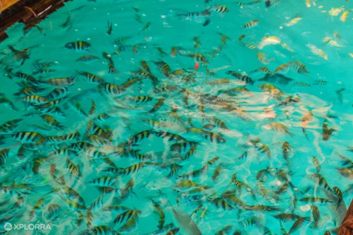
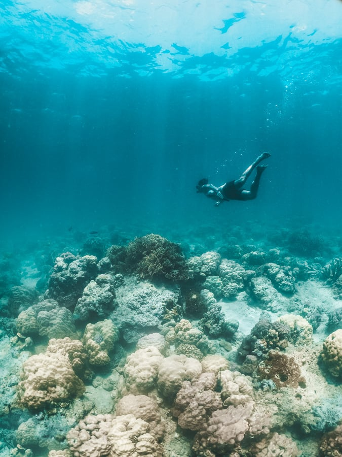
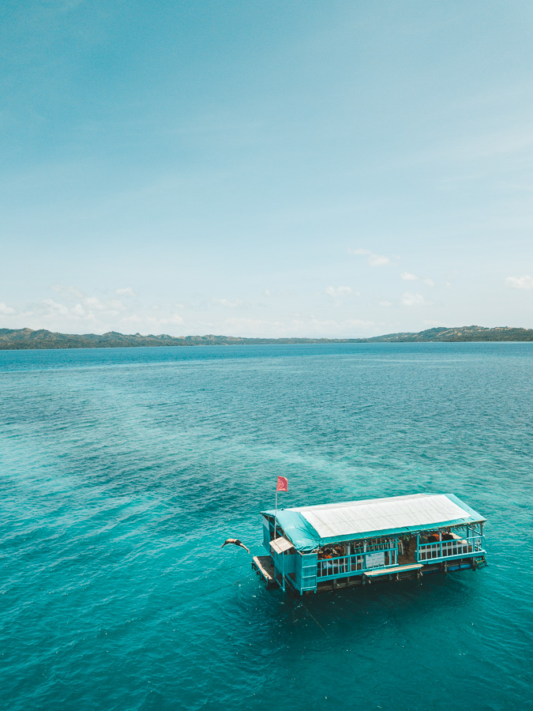
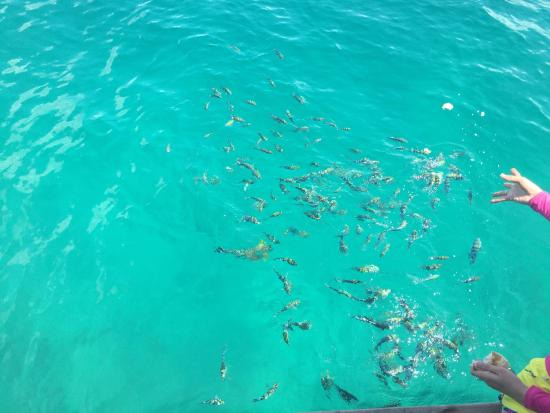

Explore the Underwater Beauty of Looc Fish Sanctuary
Located in Looc Bay, Romblon, this 48-hectare marine sanctuary is home to a variety of colorful fish, corals, and other marine life. It’s a must-visit for snorkeling and eco-tourism enthusiasts.
Photos




Why Visit Looc Fish Sanctuary?
- Home to hundreds of fish species and vibrant coral reefs
- Ideal for snorkeling and fish feeding
- Features a floating raft with a viewing area
- Perfect for eco-tourism and marine conservation lovers
- A great place for relaxation and underwater exploration